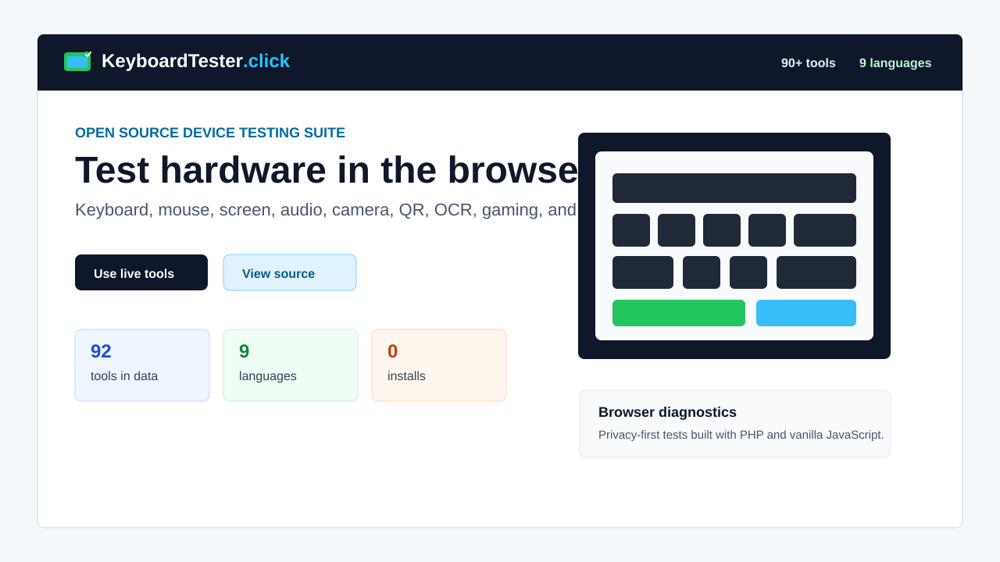

Keyboard diagnostics
Key highlighting, ghosting, N-key rollover, stuck keys, layouts, latency, and typing checks.
Open source browser diagnostics
KeyboardTester.click is a privacy-first suite for testing keyboards, mice, displays, audio, cameras, gaming input, QR/OCR workflows, and utility tasks directly in the browser.

Key highlighting, ghosting, N-key rollover, stuck keys, layouts, latency, and typing checks.
Button checks, scroll wheel, CPS, DPI, polling rate, drag behavior, controller tests, and eDPI tools.
Dead pixels, refresh rate, webcam preview, mic level, stereo checks, speaker tests, and browser permissions.
QR generation, QR reading from images, OCR, password generation, WhatsApp links, and random selection tools.
Language hubs and localized tool pages for Arabic, French, German, Japanese, Korean, Portuguese, Russian, and Spanish.
PHP, vanilla JavaScript, HTML, CSS, Web APIs, no database, and no required build system for normal development.
The live site is meant for users who need fast answers before a meeting, repair visit, keyboard purchase, monitor return window, gaming session, or support conversation. The source is public so the behavior can be inspected, forked, and improved.
The canonical directory of every live testing tool and category page.
The main keyboard diagnostic with layout switching, ghosting checks, logs, and export options.
Buying guides, troubleshooting articles, and practical device-testing explanations.
Source code, issues, pull requests, and contribution workflow.
Secondary public mirror for discovery and source availability.
Report a broken tool, browser issue, translation problem, or feature request.